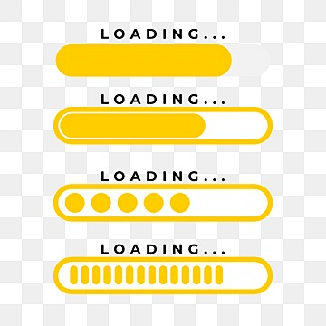
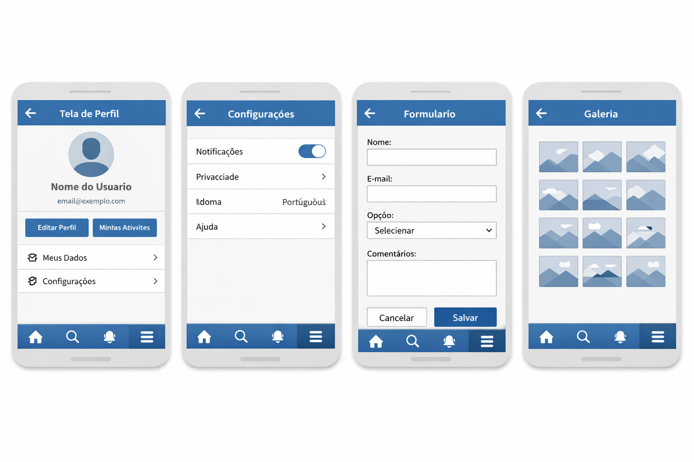
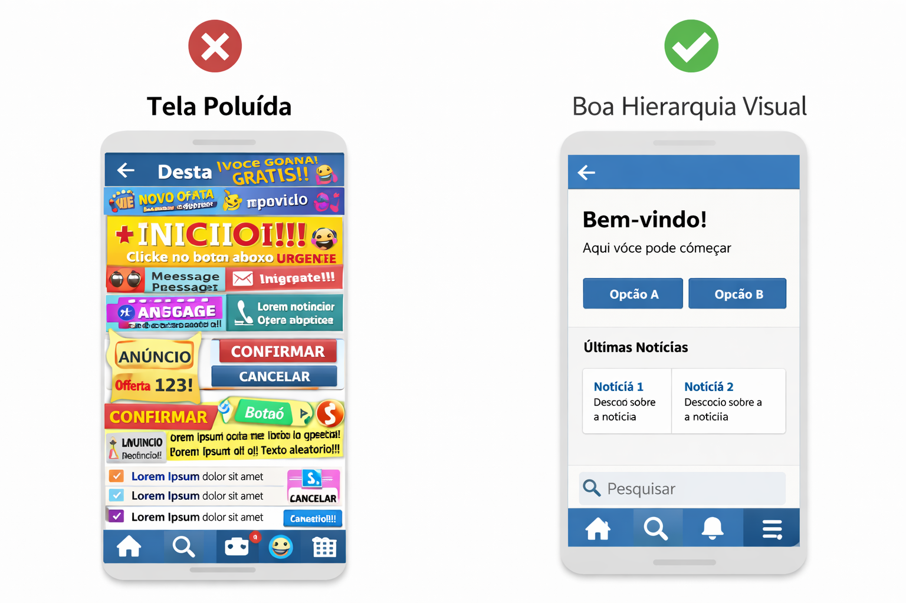
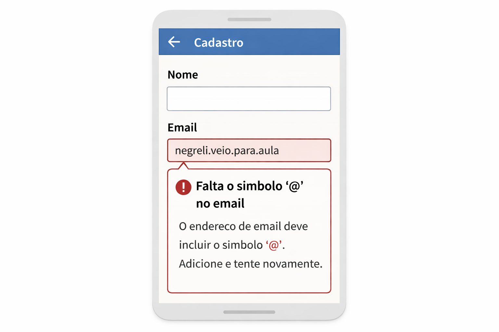
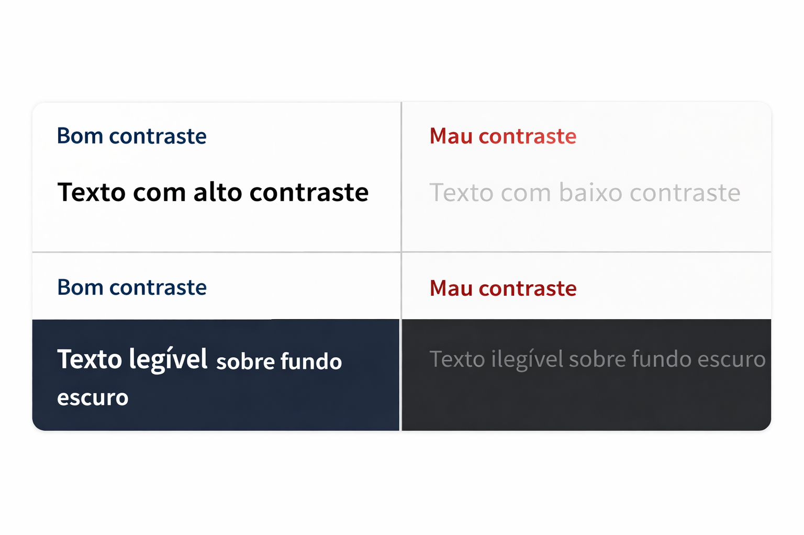

1. O que são princípios e diretrizes de design?
Princípios e diretrizes de design são regras gerais que ajudam a tomar decisões coerentes ao desenhar telas e fluxos. Eles não dizem exatamente “onde colocar cada pixel”, mas orientam escolhas como: tamanho de botões, forma de dar feedback, quantidade de informação por tela, padrões de navegação etc.
Trabalhar com princípios e diretrizes é importante porque:
- reduz decisões aleatórias (“porque eu achei bonito”);
- melhora consistência entre telas e entre membros do time;
- facilita a avaliação do protótipo (é mais fácil criticar com base em regras claras);
- aproxima o projeto daquilo que a literatura de IHC considera uma interface de qualidade.
2. Visibilidade do estado do sistema e feedback
O usuário precisa entender o que está acontecendo agora e se a ação que acabou de realizar teve efeito. Para isso, o sistema deve oferecer sinais claros de estado e feedback imediato. Exemplos de feedback: barra de progresso, mensagens de sucesso/erro, alteração de cor de botão após clique.

- Use rótulos claros em botões (ex.: “Salvar rascunho”, “Enviar formulário”).
- Mostre mensagens de confirmação quando ações importantes forem concluídas.
- Em operações demoradas, exiba indicador de progresso (spinner, barra, texto “Carregando…”).
- Deixe evidente em que página/etapa do fluxo o usuário está (breadcrumb, destaque no menu, título da tela).
- Ao clicar em um botão, algo visual muda imediatamente?
- Se o sistema estiver carregando dados, existe algum indicador visível?
- É possível saber facilmente em qual etapa do fluxo de cadastro/navegação a pessoa está?
3. Consistência e padrões
Consistência significa que elementos semelhantes se comportam de forma semelhante. Isso reduz esforço cognitivo: depois de aprender um padrão em uma tela, o usuário espera encontrar a mesma lógica nas demais.

- Mantenha mesma cor e estilo para ações de mesmo tipo (ex.: todos os botões primários na mesma cor).
- Reutilize componentes (cards, listas, campos de formulário) com a mesma estrutura ao longo do sistema.
- Use convenções da web: ícone de lupa para busca, carrinho para compras, três linhas para menu (“hambúrguer”).
- Evite reinventar padrões sem necessidade, especialmente em controles comuns.
- Todos os botões primários parecem pertencer à mesma família?
- Campos de formulário têm alinhamento, bordas e tipografia consistentes?
- O posicionamento do menu, logo e busca se mantém entre as páginas?
4. Simplicidade, foco e hierarquia visual
Uma tela não deve tentar resolver tudo ao mesmo tempo. Quanto mais elementos, mais difícil é entender por onde começar. Hierarquia visual é o uso de tamanho, cor, contraste e espaçamento para indicar o que é mais importante.

- Defina uma ação principal por tela (call to action) e destaque esse elemento.
- Use títulos e subtítulos para organizar o conteúdo; separe blocos com espaçamento generoso.
- Evite textos longos em caixa alta; prefira frases curtas e parágrafos pequenos.
- Use cor e peso de fonte para indicar importância, mas com moderação.
Faça o teste do “olhar rápido”: abra a tela do protótipo, olhe por 3 segundos e feche. Pergunte: qual ação parecia mais importante? Se a resposta for “não sei” ou “tudo chamava atenção igual”, a hierarquia visual pode ser melhorada.
5. Prevenção de erros e mensagens claras
Erros são inevitáveis, mas o sistema pode reduzir a chance de erro e também ajudar o usuário a se recuperar sem traumas. Mensagens vagas como “Erro 500” normalmente não ajudam.

- Evite ações destrutivas sem confirmação (excluir, enviar definitivamente).
- Use máscaras e validação em campos (datas, e‑mail, CPF) para evitar dados inválidos.
- Indique claramente qual campo está com erro e explique o motivo (“Digite um e‑mail válido”).
- Quando possível, permita desfazer ações (undo) ou oferecer um caminho de volta seguro.
6. Controle, liberdade e navegação
O usuário deve sentir que está no comando da interface, não preso em um labirinto. Isso significa oferecer caminhos de saída, opções de voltar e navegação previsível.
- Mantenha um menu principal visível ou facilmente acessível.
- Evite “dead ends”: telas sem opções claras de seguir ou retornar.
- Use breadcrumbs ou títulos claros para mostrar em que seção o usuário está.
- Respeite o comportamento padrão do navegador (botão de voltar deve funcionar como esperado).
7. Acessibilidade básica desde o início
Mesmo antes de estudar acessibilidade em profundidade, já é possível evitar erros graves. Pequenas decisões de layout e cor podem tornar o sistema mais inclusivo.

- Evite textos muito pequenos; teste a leitura em diferentes monitores e níveis de zoom.
- Use contraste suficiente entre texto e fundo, especialmente em botões e links.
- Não dependa apenas de cor para transmitir informação (use também ícones e rótulos).
- Planeje a ordem de foco para navegação por teclado (tabulação lógica).